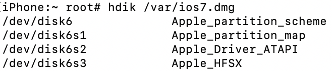

Preparations
We will need to do two things to prepare. We will back up some files needed to boot iOS 7 and then create a tar containing the contents of the filesystem image.
We will start by decrypting the filesystem image
Keys for decryption of firmware components can be found at The Apple Wiki
The root filesystem image is the largest dmg file inside the IPSW
dmg extract encrypted.dmg rw.dmg -k key
We will now need to convert the image to UDZO format
dmg build rw.dmg ios7.dmg
You will now have a read-only decrypted filesystem image
Now you will need to connect to the device. Start off by creating an iproxy tunnel:
iproxy 2222 22
You should see "waiting for connection". Let this run in the background and open a new terminal window to connect to the device using this command:
ssh -l root -p 2222 127.0.0.1
Password should be "alpine"
Create mount points for the filesystem image:
mkdir /mntdmg
Send decrypted filesystem image to device
scp -P 2222 ios7.dmg root@localhost:/var
Download hdik to mount image
wget -P /usr/bin https://iarchive.app/Download/hdik && chmod 777 /usr/bin/hdik
Mount decrypted filesystem image
hdik /var/ios7.dmg
You should see output similar to this, you will need to mount the partition labeled "APPLE_HFSX" (/dev/disk6s3, in the case of this example)
mount_hfs -o ro /dev/disk6s3 /mntdmg
You can now make a tar archive of the filesystem image...
tar -cvf /var/ios7.tar -C /mntdmg .
and transfer this to your computer
(Run this in a new terminal window)
scp -P 2222 root@localhost:/var/ios7.tar ./ios7.tar
You will also want to transfer these four files/folders to your computer which are required for booting:
scp -P 2222 root@localhost:/System/Library/Caches/apticket.der ./apticket.der
scp -P 2222 root@localhost:/usr/standalone/firmware/sep-firmware.img4 ./sep-firmware.img4
scp -r -P 2222 root@localhost:/usr/local/standalone/firmware/Baseband ./Baseband
scp -r -P 2222 root@localhost:/var/keybags ./keybags